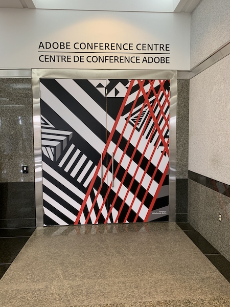

Parking Tip: The lot on Aberdeen St. is only $3 for the night after 3pm.
From Preston St. enter into the Preston Square building at 347 Preston St. This will save you walking up the side road to the entrance at 343 Preston St.
Once inside say "hi" to our friend security guard. If they ask where you are going then Ottawa JavaScript meetup is the answer. Behind the security guard station is a set of stairs, take them up to the second floor.
At the top of the stairs make a right and take that long hallway down to tower 2. You'll know you've gotten there when you see the next security guard station.
Right behind that security station and before you hit the elevators you will see a big door with the Adobe A. Your fun and exciting meeting awaits you behind those massive doors.
